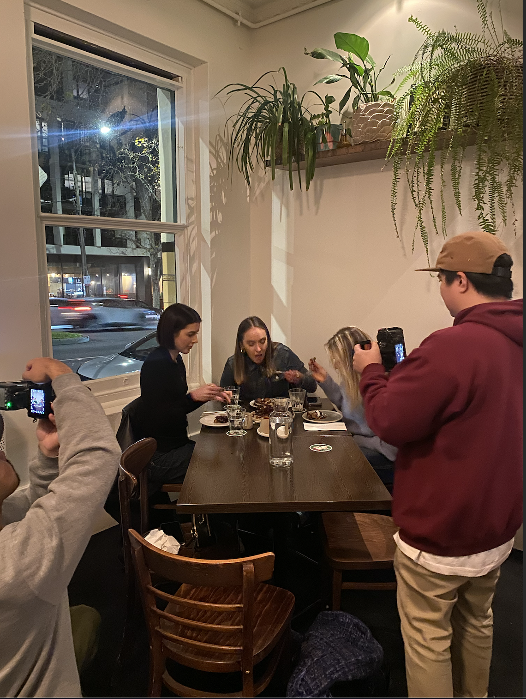
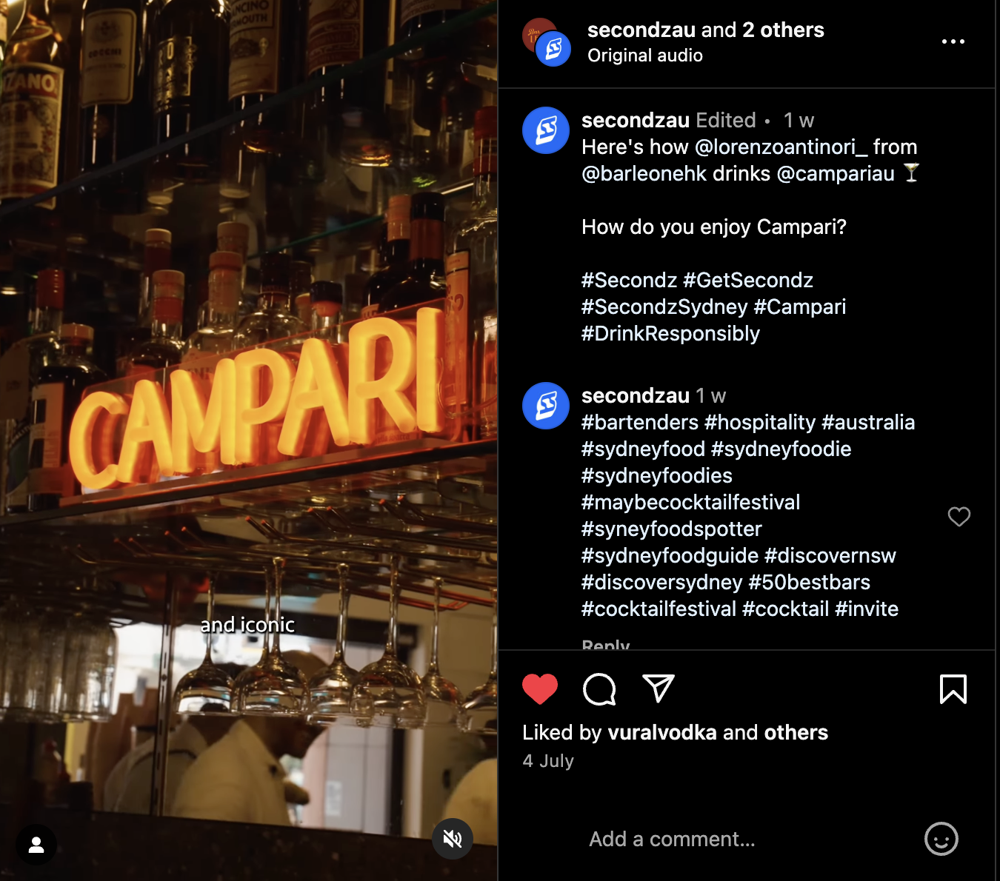

7th Day

Today I did the text graphic overlays for the 48 hours on Limecoast video with Tasting Australia. I also got to redesign secondz subtitles they are doing to start using in instagram reels. I learnt how to import SRT (subtitle files) as I have never used them before and how to edit them in premier pro. I learnt the importance of text and how it can chnage the aesthetic and intention of a whole video. I also learn the importance of reel and tiktok safe guides when posting content with subtitles.
8th Day
Converted all my previous text graphic overlays made to photoshop files as that is what the other editors are comfortable using. Made a base template that could be used for all other video going forward that include graphic overlays. Made another Breakfast with Secondz Grapjic overlay and then go to go out on a shoot and film some BTS footage for the June Recap Video! It was really exciting to get to meet everyone in person and see how the videograohgers work. Then I had a break and went to a night shooting at the Lincoln for the secondz certified series. I got to do more BTS footage and B-roll for the video and get to shadow the videographer and photographer.
9th Day
Added in the graphics for the breakfast with Secondz Video. Worked on the Campari Overlays to animate into the final render of the Video. Its been so nice seeing the campari video come together. Before I started this internship for Uni I was already interning for Secondz on my own. The first task I did was sequencing the Campari video. This was a really fun and challendging task as Camapri was an important client and they have a crisp distnictive aesthetics.
Link to Final Instagram Reel